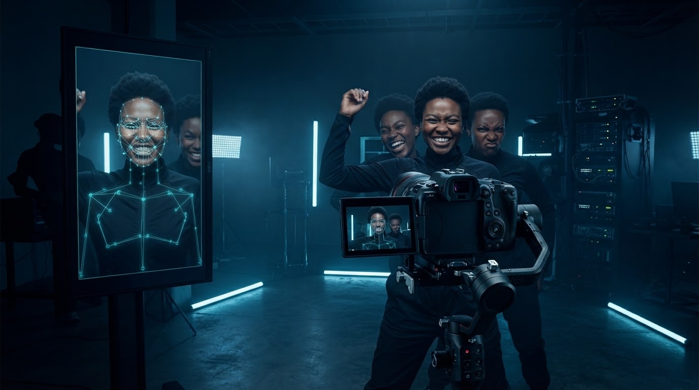
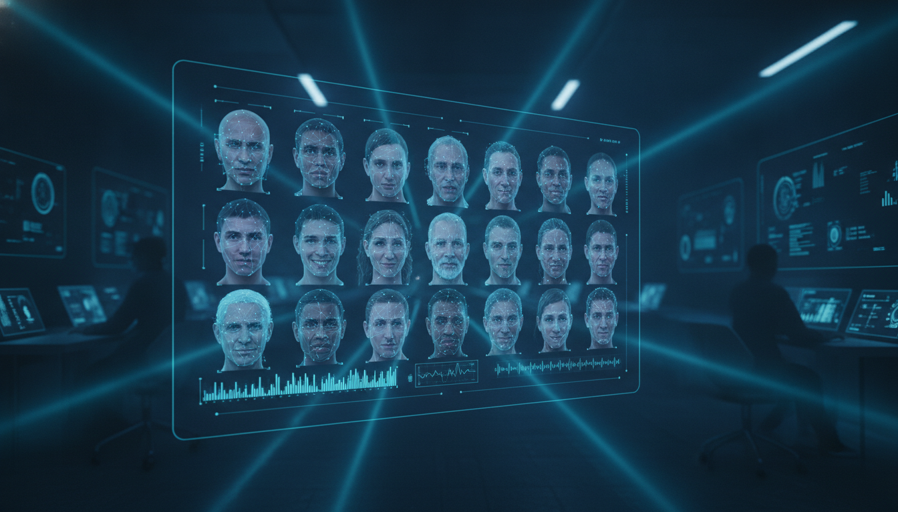
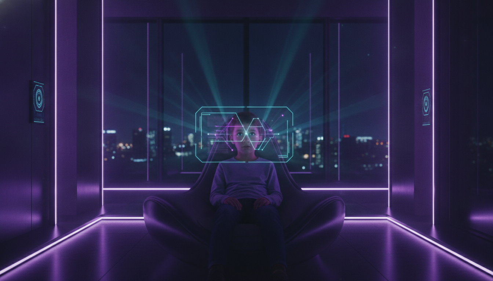
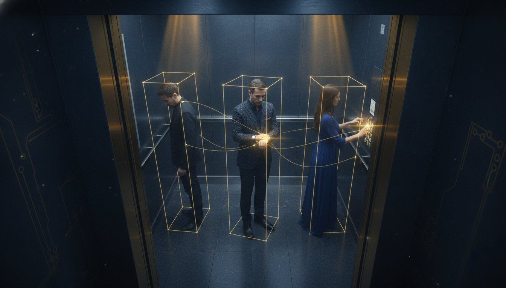
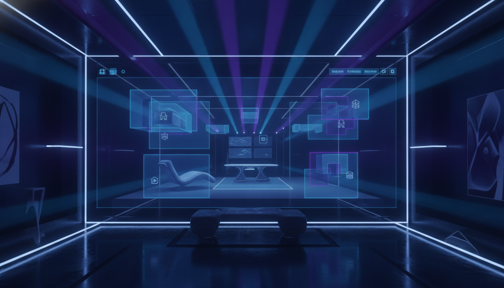
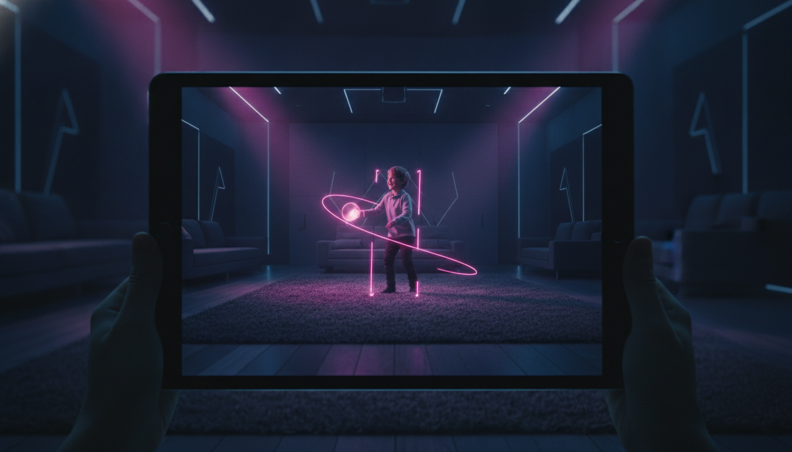
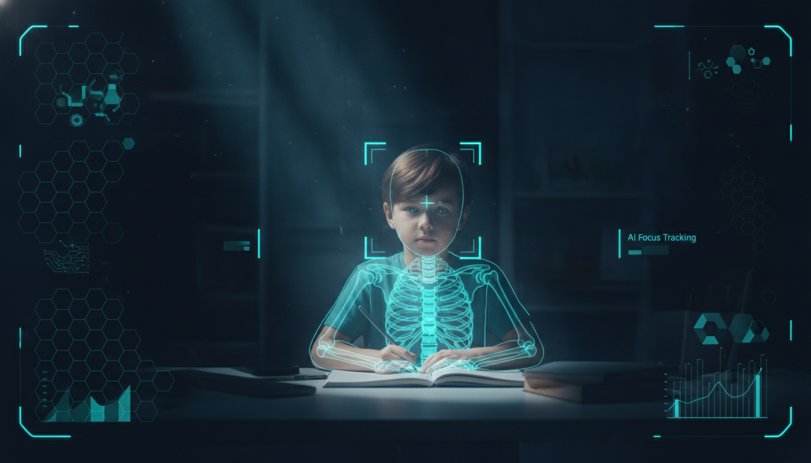
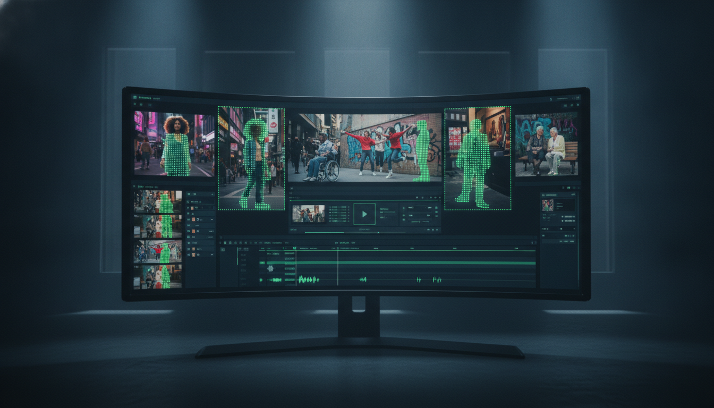
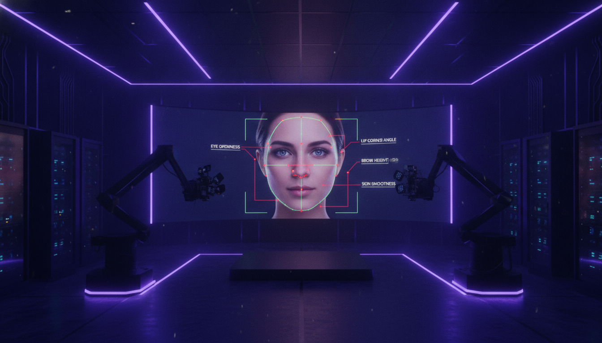
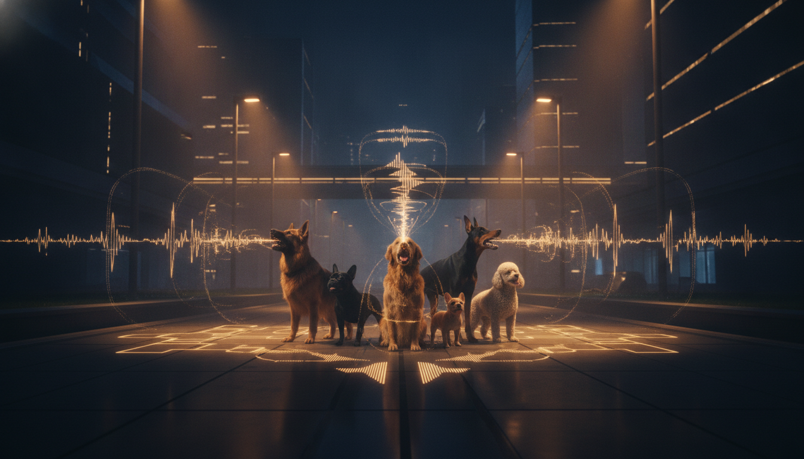

千人表情肢体 4k千人表情肢体高清视频数据库
室内/室外环境采集，使用索尼、佳能等专业摄像机竖屏录制千人表情肢体动作与相关视频素材。

千人表情肢体 4k室内/室外环境采集，使用索尼、佳能等专业摄像机竖屏录制千人表情肢体动作与相关视频素材。

表情图像 1000X1200覆盖室内/室外环境，面向 3-60 岁人群，手机竖屏采集表情图像与短视频素材。

眼保健操 480P常规家居环境采集，覆盖 3-13 岁儿童，手机竖屏录制眼保健操动作数据。
常规家居环境采集，面向 3-6 岁儿童，使用天猫精灵横屏采集点读交互视频。

电梯行为 1080p电梯场景采集，覆盖 20+ 年龄段，使用大疆 AIR4 采集电梯行为动作片段。

室内场景 720P室内环境采集，使用手机横屏录制，用于室内场景理解、行为识别和视频分析。

儿童瞬间 480P室内/室外环境采集，覆盖 0-10 岁儿童，手机和平板横屏采集生活瞬间视频。
常规家居环境采集，覆盖 6-12 岁儿童，使用天猫精灵横屏采集点读学习视频。

学习看护 720P常规家居环境采集，覆盖 6-15 岁学习场景，手机横屏录制学习看护视频。

人像分割 720P室内/室外环境采集，覆盖 18-40 岁人群，手机横屏+竖屏采集人像分割视频。

形象视频 1080P室内环境采集，覆盖 18-25 岁人群，手机横屏+竖屏录制形象视频素材。

犬种叫声 1080P室内/室外环境采集，使用手机横屏+竖屏录制多犬种叫声与相关视频素材。
逐帧目标位置 + 类别 + 实例 ID，支持稠密目标与小目标
稳定 ID 跨帧关联，遮挡场景下保持轨迹完整
按行为或事件切分时间段，输出起止时间戳与类别
多人多帧 17 / 21 关键点轨迹，附遮挡可见性